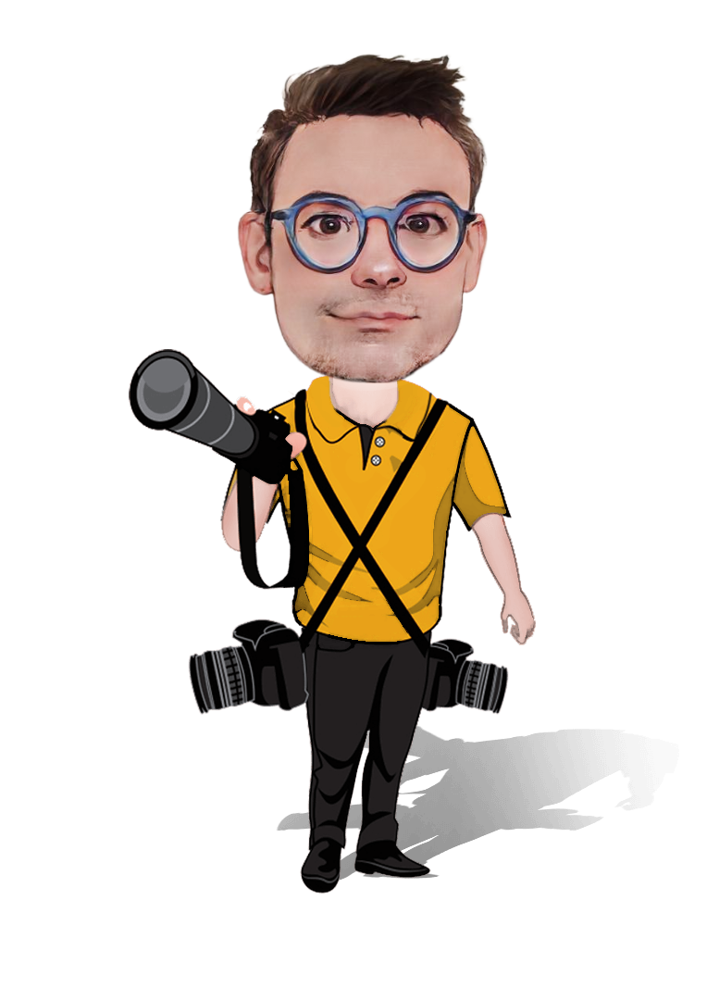

Hello!
About me
Guillaume CAMUS
40 years old
I like to design things and check if the design is viable and fits the needs. I am curious, I like to learn new things. I consider computer science as a tool in constant evolution. I’m passionate about technology and automation, I've always been looking to improve my work.
Hobbies
Experiences
 I did my apprenticeship at Renault in. This experience was very enriching for me. I was in total autonomy to develop an internal online store to order personalized paperwork (business card, notepad, ...). I also took part in a big company project concerning collaborative publishing and document security in companies. At the end of my apprenticeship, I was taken in interim to continue the various projects in which I had taken part.PHPZend FrameworkHTMLCSSJavascriptjQueryAJAXSOAPSVNSQLMySQLWindows
I did my apprenticeship at Renault in. This experience was very enriching for me. I was in total autonomy to develop an internal online store to order personalized paperwork (business card, notepad, ...). I also took part in a big company project concerning collaborative publishing and document security in companies. At the end of my apprenticeship, I was taken in interim to continue the various projects in which I had taken part.PHPZend FrameworkHTMLCSSJavascriptjQueryAJAXSOAPSVNSQLMySQLWindows Vozavi was my first startup experience. The objective of Vozavi was to browse the web and identify opinions of Internet users or professionals on 33 themes in order to allow the consumer to choose the right products and services at the best price. Unlike other services, Vozavi used the technology to qualify the tone of the reviews.PHPJavaHTMLCSSJavascriptjQuerySSHSSLLinuxPhotoshop
Vozavi was my first startup experience. The objective of Vozavi was to browse the web and identify opinions of Internet users or professionals on 33 themes in order to allow the consumer to choose the right products and services at the best price. Unlike other services, Vozavi used the technology to qualify the tone of the reviews.PHPJavaHTMLCSSJavascriptjQuerySSHSSLLinuxPhotoshop I joined Modis as a design and development engineer in their service center where I was able to participate in the implementation of projects for the Orange group and France Telecom. Then, I took more responsibilities to become project manager and service center manager.Magento 1.XPHPZend FrameworkSymfonyPERLJavaCHTMLCSSCSS3JavascriptjQuerySOAPSVNPayment ServicesSSHSSLLinuxOracleMySQlRESTFlashvagrant
I joined Modis as a design and development engineer in their service center where I was able to participate in the implementation of projects for the Orange group and France Telecom. Then, I took more responsibilities to become project manager and service center manager.Magento 1.XPHPZend FrameworkSymfonyPERLJavaCHTMLCSSCSS3JavascriptjQuerySOAPSVNPayment ServicesSSHSSLLinuxOracleMySQlRESTFlashvagrant I participated in founding Infogene, an ESN specialized in the pharmaceutical industry. I set up their service center and assisted several clients in the implementation of their digital projects.Magento 2.XPHPSymfonyJavaC#HTMLGolangCSS3JavascriptReactSOAPGitPayment ServicesSSHSSLLinuxOracleMySQlRESTDocker
I participated in founding Infogene, an ESN specialized in the pharmaceutical industry. I set up their service center and assisted several clients in the implementation of their digital projects.Magento 2.XPHPSymfonyJavaC#HTMLGolangCSS3JavascriptReactSOAPGitPayment ServicesSSHSSLLinuxOracleMySQlRESTDocker I'm in charge of improving the developer ecosystem. The goal is to reduce the friction and time wasted due to an ecosystem whose bricks may not fit together well to improve the developer experience. I contribute to the implementation of tools for the development environment. I contribute to the maintenance of the CI and CD pipelines. I develop training on best practices and tool usage. I assist developers in the start-up of their projects or during the implementation of features. I develop utilities to automate processes (changelog generation, openapi). I do technology watch and I evaluate some discoveries to assess their impact on the production chain.PHPSymfonyJavaKotlinHTMLCSSGolangRustCSS3JavascripttypescriptGitLinuxPostgrSQLMySQlRESTGraphQLGRPC
I'm in charge of improving the developer ecosystem. The goal is to reduce the friction and time wasted due to an ecosystem whose bricks may not fit together well to improve the developer experience. I contribute to the implementation of tools for the development environment. I contribute to the maintenance of the CI and CD pipelines. I develop training on best practices and tool usage. I assist developers in the start-up of their projects or during the implementation of features. I develop utilities to automate processes (changelog generation, openapi). I do technology watch and I evaluate some discoveries to assess their impact on the production chain.PHPSymfonyJavaKotlinHTMLCSSGolangRustCSS3JavascripttypescriptGitLinuxPostgrSQLMySQlRESTGraphQLGRPC